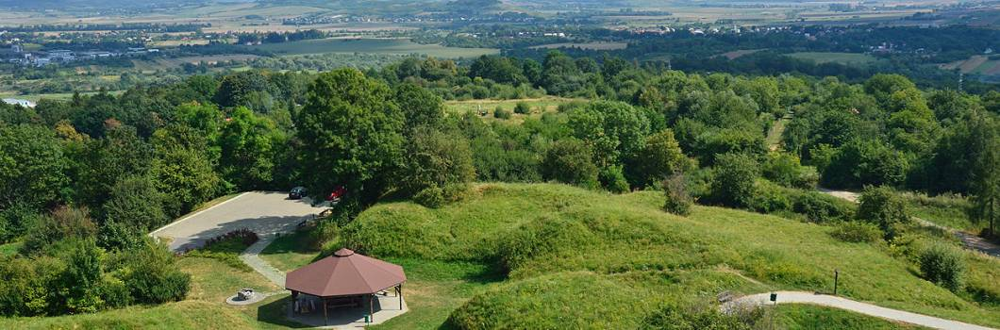

Powrót do strony głównej

Zniesienie - górujące nad Przemyślem wzgórze, którego nazwa upamiętnia pokonanie „zniesienie” w tym miejscu Tatarów.
Najbardziej znanym punktem Zniesienia jest tajemniczy Kopiec Tatarski (352 m n.p.m.), według legendy usypany przez Tatarów jako mogiła poległego w walce chana.
Od wielu wieków, a może nawet tysiącleci, kopiec służył jako ważny punkt obserwacyjny w systemie obronnym Ziemi Przemyskiej.
Roztacza się z niego rozległa panorama Kotliny Sandomierskiej oraz Płaskowyżu Sańsko- Dniestrzańskiego,
a także Gór Sanocko-Turczańskich i Pogórza Przemyskiego w Karpatach.
W II połowie XIX wieku Austriacy wybudowali na Zniesieniu kilka obiektów wchodzących w skład pierścienia wewnętrznego Twierdzy Przemyśl.
Najbliżej kopca zobaczymy baterię XVI b „Kopiec Tatarski”, ale największym obiektem jest fort XVI „Zniesienie”.
Tworzą go trzy szańce połączone w jeden obiekt umożliwiający obronę okrężną.
Zachowały się m.in. fosy i wały ziemne z poprzecznicami kryjącymi schrony pogotowia oraz ruiny betonowego schronu,
wysadzonego tuż przed poddaniem twierdzy Rosjanom w 1915 roku. Z odsłoniętych fragmentów fortu roztacza się ładna panorama Przemyśla i okolic miasta.
W sąsiedztwie fortu znajduje się Krzyż Zawierzenia z 2000 roku. Obok wieży telewizyjnej zobaczymy bramę forteczną,
a przy niej górną stację wybudowanego w 2006 roku stoku narciarskiego z trzema trasami oraz całorocznymi atrakcjami: koleją krzesełkową oraz torem saneczkowym.
Recenzja miejsca